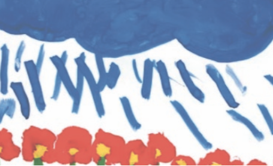

The conceptual framing for this exhibition emerged as a result of an ongoing Art at Work project, a collaborative and accumulative project that is interested in examining the past-present-future relationships between art and education in Aotearoa New Zealand.
Art at Work initially emerged in 2013 as a result of research (with exhibition, see Art at Work: https://www.artandeducation.co.nz/ art-at-work-2013) in memory of the passing away of educator, Elwyn Richardson, and his relationship with artist, Jim Allen.
Elwyn Richardson’s work that promoted an art(full) inquiry approach to education is well documented in his book, In the early world (1964). The dynamic art (and craft) work that Richardson achieved with children in attendance at Oruaiti Primary School was accomplished because of both, the significance attributed back then to art as an important vital way of knowing the world, as well as the collaborative relationships that existed between Elwyn (i.e. teachers) and artists, such as artist Jim Allen.
Back in 1953, when Jim Allen was initially employed by Gordon Tovey as an Art Adviser for the then Department of Education, he was sent up to North for some time to work very closely with Richardson (and the wider communities that surrounded Oruaiti) to de- velop ways of working with art (and craft), in education, with children, teachers and their families, in the community.
The ways that emerged were innovative and responsive to then contemporary theories and technologies that had relevance to both art and education. Recently, in part, because of considerable concernregarding the status of art in education, this history, other local histories, have ignited considerable interest (see, for example, Bieringa, 2016; Craw & O’Sullivan, 2016;
“...the arts ...are integral and inseparable parts of what it is to be human... The challenge ... is that the ben- efits of art, ...[is] not always readily available to every New Zealander. [It] should be. Every one of us”
We have yet to understand the current policy directions for art in education as they might (not) be reflected in the recent speeches delivered by Jacinda Adern, our Minister for Arts,Culture & Heritage.
In an earlier speech, Adern states, “[a]rts and culture are not a ‘nice to have’. They are an essential part of our individual, community and national identity. For too long they have been treated differently when it comes to sustainable growth, career paths and eco- nomic benefits,” (n.p.).
Adern’s speeches emphasise the importance of galleries and museums, the sustainability of art in our communities, this is so great. The ‘pedagogical turn’ discourses in art are very much alive, and effective: the galleries, museums and other community sites that are taking up this challenge and making art available in the community, to wider audi- ences, are gaining considerable momentum, perhaps.
With and alongside this,the business of art education is growing too. However, what’s missing in Adern’s speeches is any articu- lated wisdom that makes the connections with how essential the benefits of art might be being played out (yet), let alone be readily available in the everyday lives of ALL chil- dren within the childhood milieu of its more formal public educational institutions.
BODY MATTER
18-23 NOVEMBER 2019
ST PAUL ST GALLERY THREE
CLOSING EVENT:
23 NOVEMBER 3.00PM
ST PAUL ST GALLERY THREE
CURATED BY:
Members of the Artists in Education Collective Aotearoa (AiECA)
ANYA HENIS
Cathlin Ward-Michell
Aya Yamashita
Emma Thomsen
Karen Turner
with Janita Craw and Ophelia King
Thinking this way, that way, about the body, about art, about our art making bodies, as something real, that is, as matter, and as something that matters in education, remains a catalyst for the project. In time, this opens up spaces for thinking metaphorically about ourselves, the children, the places and things we work with, as a group, a collective i.e. a body – a complex body, without organs? As such, Body Matter is an exhibition that brings together, it materialises and makes matter the work of a diverse group, a network of people who identify as artists, as children, as teachers and educators. This body of people, their work, have come together, in one way or another, because of a shared interest, a knowledge of, a love of art, as well as an interest in making visible the work we do with art, with our bodies, in different educational settings.
The body of works
Anya Henis and Jeena Shin - with the children, Rm 19, New Windsor Primary
For our second art project with Jeena Shin this year, year 3 and 4 students in Rm 19 are considering the notion of an art gallery; what goes there, who goes there and where it goes. The students are creating artworks exploring signature, shape and object in their classroom, then travelling to the exhibition to install their works together as a body of work.
Cathlin Ward-Michell – with the young people, Year 7 and 8, Te Atatu Peninsula Intermediate
The hardest part about being an intermediate school Visual Art teacher? The strange balance that seems to need to be struck between how I thought I would teach Art to 11 and 12 year olds, 11 and 12 year olds expectations of art and what constitutes a worthy art work - where these expectations come from and the gap that I sometimes feel exists between art education and real world art practice. This gap is a view into a dichotomy.
Emma Thomsen – with the young children, Tots Corner Childcare
In collaboration with teachers and young children from Ōtara to Whangaparaoa, four canvases were circulated to pierce the boundaries of twelve closely knit early learning communities. This created opportunities for our young children to encounter the thinking of their peers over a larger geography.
Exhibiting this work in the gallery accentuates young children’s capabilities and the macro political empowerment they enact through shared artistic dialogue. The work invites its audiences to be drawn into, enveloped by and seen within, the continuing conversation of citizenship in Tāmaki Makaurau.
Aya Yamashita – with children from Epsom Normal Primary School
Karen Turner - with the young people, Whangaparaoa College
Being creative involves thinking outside the box. But how do you do that? Making artworks with Squiggla offered our class a non-judgemental mark making exercise involving the use of visual language, of dots and lines, opening up possibilities for being inventive and creative - using the body, the hand, the eye, and the mind.
The learners experimented inside/outside the classroom in ways they'd never done before – inventing new ways of making. As the project unfolded, the idea of making ‘art’ and ‘exhibition’ challenged us to think outside the box, to literally exhibit the Squigglaworks on the outside of boxes, creating our own Squiggla Space.

BUILDING BLOCKS /
BREAKING ROCKS
3-5 OCTOBER 2018
ST PAUL ST GALLERY THREE
CURATED BY:
ANYA HENIS
KATHRYN TULLOCH
JANITA CRAW
IN COLLABORATION WITH CHILDREN FROM:
NEW WINDSOR SCHOOL PARNELL DISTRICT SCHOOL

Building Blocks / Breaking Rocks (2018) draws on the knowledge, expertise and practices oftwo artists/educators/teachers working in collaboration with a group of children from twolocal primary schools where, for one reason or another, an art oriented pedagogy is supported and enabled to flourish.
For one artist/educator, art emerges be- cause of the school structures that provide resources (including the employment of a qualified artist/educator) for children, across the school, who reveal an interest in art to participate in regular art learning experiences.
For the other qualified artist/teacher, art is an identifiable learning area, noted on the weekly programme in anticipation that all children in attendance in that class will engage, with art, its makings.
Building Blocks / Breaking Rocks (2018) positions children’s art works, once again, outside of education, in the public world of art.
This positioning can be understood as an act of aesthetic experimentation with places where traditionally still dominant somewhat hierarchical, if not mythical,categorisations easily prevail: artist/audience, art/pedagogy, art/education-education/art, teacher/ student, adult/child, nature/nurture. It is anticipated that this exhibition-making act(ivism) will contribute to a disruption of the restrictive discourses that inform a knowledge of child, and/or other, identities and the easy categorisations that persist...
A collective assemblage of desire: “...is not an individual feature, but rather a feature of the ‘pack’. We exist in ‘packs’ and we do unconsciously. We... must avoid all attempts to ‘speak for the other’ ...in favour of focusing the ...childhood milieu and the staging of places where collective assemblages of desire can construct themselves in unexpected not yet defined ways (Olsson, Dhalberg & Theorell, 2016, p. 736).
Both building and breaking are construction site activities, blocks and rocks are construc- tionsite tools – these activities and tools are synonymous with childhood.
We are hopeful that positioning children’s art work in the gallery, a site where art is staged, culture and knowledge are produced, contributes something to constructing spaces that are capable of contesting and offering alternative child- identity discourses, ones that enable the milieu of childhood, of children, to be immersed in the wholeness of that which they/we are studying –art, life?
As a result, it is expected that the child- art practices that emerge inside/outside education develop a capacity to widen the engaging (with) art offerings available to and with children – and others in their lives. Chil- dren, their families, art, artists, teachers, and educators, as a result, will experience a greater sense of knowing art and the aesthetic agency art, its makings, offer - in much more than ‘nice to have’ ways, but rather in complex ways that are recognised as integral and inseparable parts of what it means to be child, human.